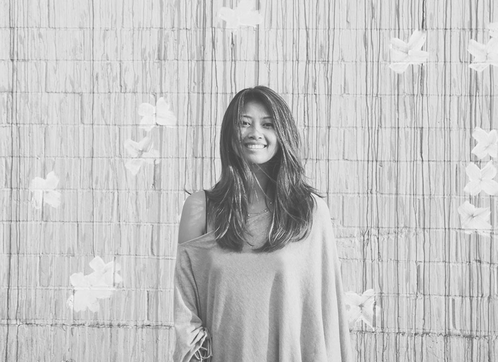

about me
After graduating from the University of Southern California with a degree in Business and minor in Communication Design, I went to work for a small market research agency in Los Angeles called Bovitz. It was here where I discovered that what I loved most was bringing the data that we collected and analyzed to life in a visualized report. I decided to embark on an adventure studying graphic design at RMIT University in Melbourne, Australia. I'm currently back in San Francisco pursuing a career in product design.
Throughout the years on my non-linear journey I've learned the language of HTML/CSS, Javascript, JQuery, honed my practice in Photoshop, Illustrator, and InDesign, and picked up some new skills with Sketch, InVision, and Marvel while trying to keep up with all the other prototyping tools that come out every other week. My goals are probably much the same as any other experience designer - to create things that make people's lives a little simpler, a little easier, a little better than before.
Some things I enjoy –– yoga, cooking delicious veggie food, citing information from podcasts, pretending to be outdoorsy, derpy pets, ceramics, sustainability, making spotify playlists, having existential crises, caring for and simultaneously killing plants, thinking about the future, musical instruments, and hammocks.